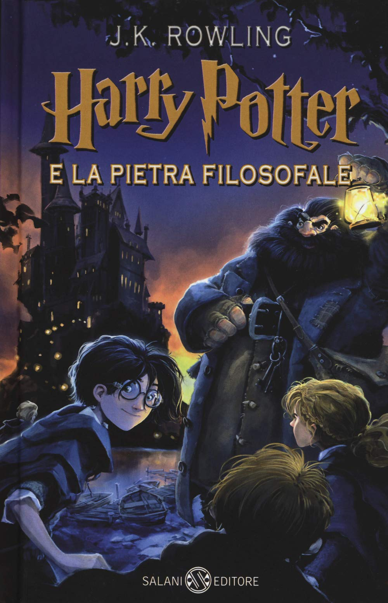
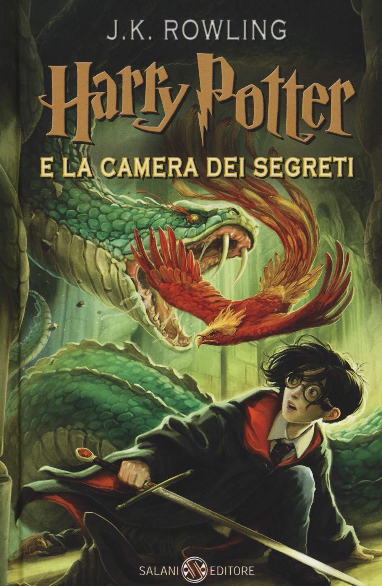
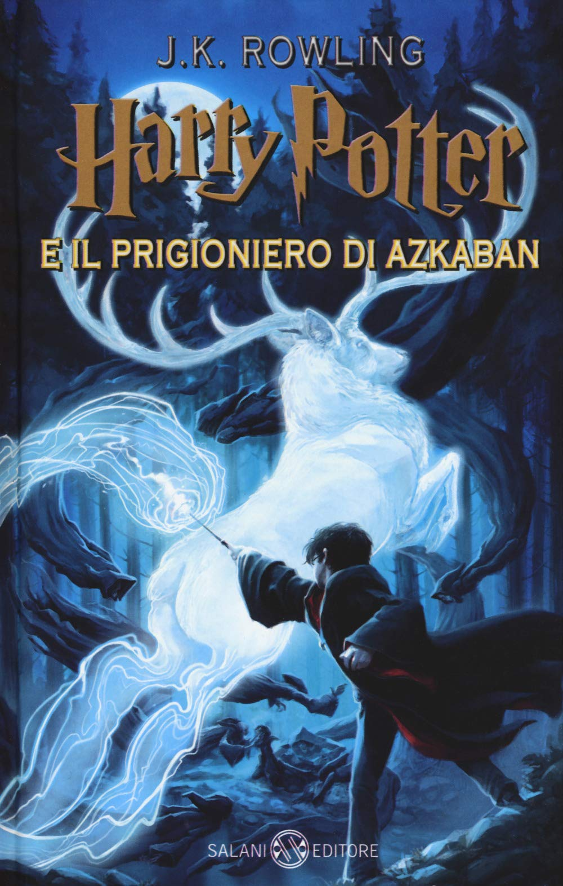
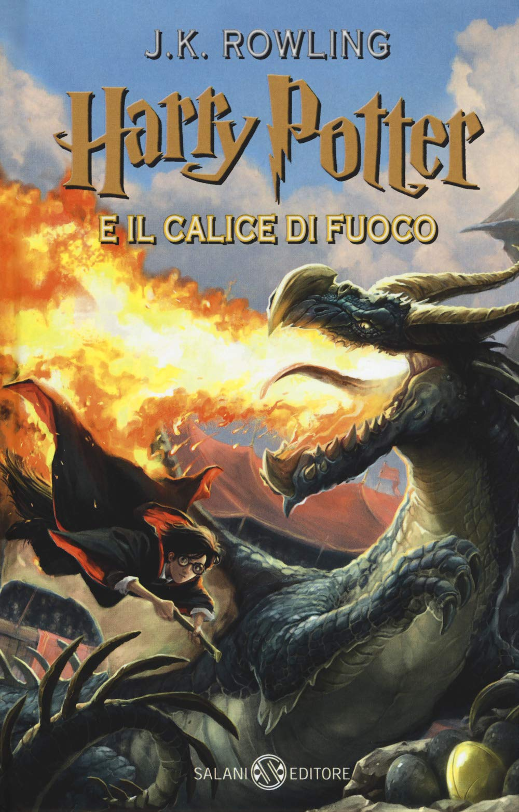
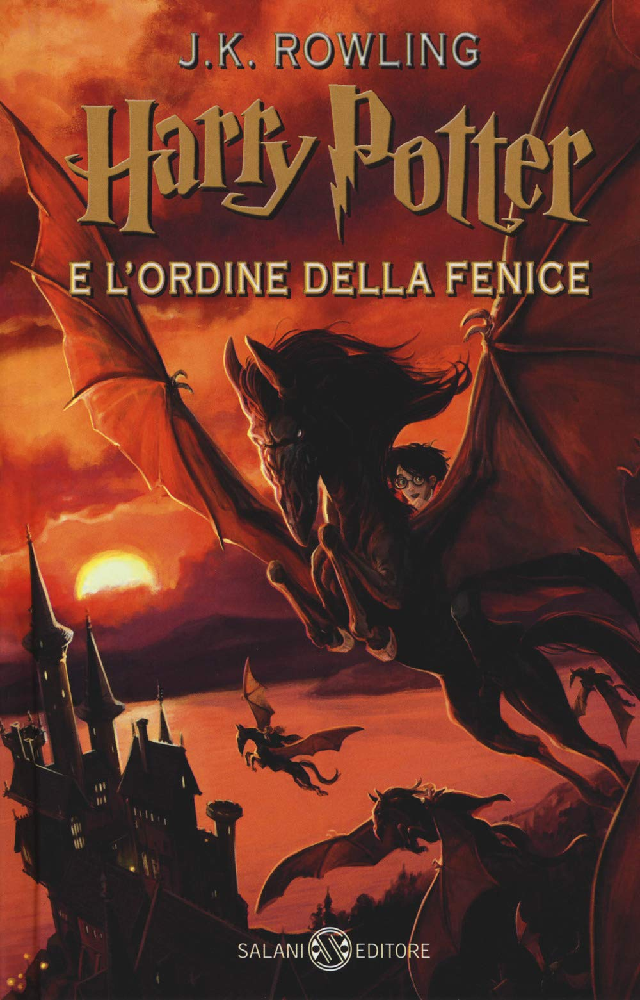
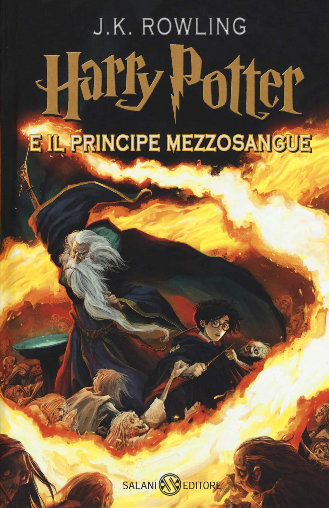
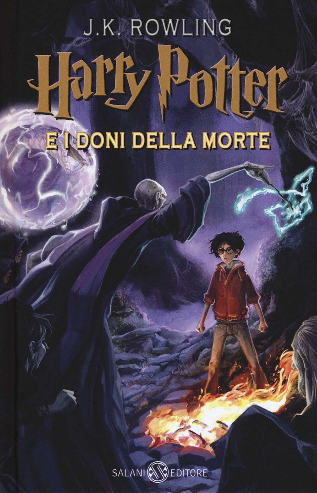

Harry Potter e la Pietra Filosofale 
“Non ci sarà bambino in tutto il mondo che non conoscerà il suo nome”
Così inizia la leggenda e la storia di Harry Potter, il bambino che è sopravvissuto. Il piccolo Harry, rimasto orfano ancora in fasce, vive una vita del tutto normale e ordinaria a Priviet Drive, adottato dagli insofferenti zii e compagno di giochi dell’arrogante e capriccioso cugino Dudley; in verità, Harry, del tutto normale non lo è mai stato e, il giorno del suo 11esimo compleanno, riceve la visita di uno strano personaggio che gli svelerà una verità che cambierà la sua vita per sempre: lui è un mago. Harry abbandona l’ostile ambiente famigliare che mai lo aveva amato e raggiunge il mondo magico, unendosi ai suoi compagni e iscrivendosi al primo anno della Scuola di Magia e Stregoneria di Hogwarts; li farà la conoscenza di maghi e streghe di tutte le età, professori, compagni di classe, amici e nemici e, soprattutto, conoscerà Ron e Hermione, i suoi inseparabili compagni di avventure. L’anno scolastico a Hogwarts si rivelerà tutt’altro che ordinario e, tra una lezione e l’altra, Harry scoprirà la verità sulla morte dei suoi genitori, il significato della sua cicatrice, perché è chiamato “il bambino che è sopravvissuto” e arriverà a scontrarsi, per la prima volta, faccia a faccia con la sua nemesi, Lord Voldemort, il più grande mago oscuro di tutti i tempi, l’assassino dei suoi genitori scomparso dopo aver tentato, invano, di ucciderlo. Il male sembrava scomparso e invece ritorna proprio con l’arrivo di Harry a scuola e Voldemort, troppo debole per tornare al potere, tenterà in tutti i modi di entrare in possesso della Pietra Filosofale, sostanza in grado di generare l’Elisir di Lunga Vita, in grado di donare l’immortalità.
Harry Potter e la Camera dei Segreti 
“La Camera dei Segreti è stata aperta, nemici dell'Erede...temete”
Harry Potter trascorre le vacanze a casa degli zii. Una sera riceve la visita di Dobby, un elfo domestico, che gli dice che non potrà tornare alla scuola di magia perché qualcuno vuole ucciderlo. Harry Potter però non vuole rinunciare a frequentare il secondo anno della scuola e così Dobby fa una magia nella casa degli zii di Harry. Quest'ultimo riceve immediatamente una comunicazione del Ministero della Magia, che pensa sia stato Harry a compiere la magia e gli ricorda che non può usare i suoi poteri nel mondo dei Babbani durante l'estate. Gli zii di Harry lo rinchiudono nella sua stanza, finché una notte i Weasley arrivano davanti alla sua finestra a bordo di un'auto volante e lo liberano. Harry così si trasferisce a casa dei Weasley fino alla fine dell'estate. Arrivato il momento di tornare a scuola, Harry e Ron perdono il treno e decidono di raggiungere la scuola a bordo dell'auto volante. Arrivati a scuola, scoprono che c'è un pericoloso mostro che incombe sulla scuola, mettendo in pericolo tutti. Si diffonde anche la notizia che sia stata riaperta la Camera dei Segreti, una stanza creata da Salazar Serpeverde per difendere i propri dipendenti, nella quale ci sarebbe un mostro terribile. Il nuovo insegnante di Difesa contro le Arti Oscure, al posto di Raptor, è Gilderoy Allock. Intanto gli studenti scoprono che Harry è in grado di parlare il serpentese (come Voldemort) e pensano sia stato lui a riaprire la Camera dei Segreti.
Harry Potter e il Prigioniero di Azkaban 
“La felicità si può trovare anche negli attimi più tenebrosi, se solo qualcuno si ricorda di accendere la luce.”
Per Harry Potter è arrivato il momento di iniziare il terzo anno nella Scuola di Magia di Hogwarts dopo un'estate burrascosa nella casa degli zii. Durante il terzo anno Harry Potter si ritrova a dover frequentare nuove materie, come Divinazione, con la professoressa Sibilla Cooman, e Cura delle Creature Magiche, con Hagrid. Inoltre gli studenti, durante l'anno, potranno partecipare ad uscite organizzate a Hogsmeade, un villaggio di maghi nelle vicinanze di Hogwarts. Harry scopre che Sirius Black, che viene descritto come un pericoloso criminale, è evaso da Azkaban, la prigione dei maghi. In seguito scopre che Black, ai tempi della scuola, era un grande amico di suo padre, James Potter, di Remus Lupin, il nuovo insegnante di Difesa contro le Arti Oscure, e di Peter Minus. I quattro avevano fondato un gruppo di animaghi per proteggere Lupin, che durante l'infanzia era stato morso dal lupo mannaro Fenrir Greyback ed era poi diventato lui stesso un lupo mannaro.Harry intanto continua a scoprire nuovi elementi sul pericoloso prigioniero di Azkaban: era il "custode segreto" dell'Incanto Fidelius, l'incantesimo di protezione che era stato lanciato sulla casa dei suoi genitori e che impediva a Voldemort di trovarla. Secondo le informazioni che riceve Harry, Sirius Black avrebbe tradito i genitori di Harry, svelando ai seguaci di Voldemort, i Mangiamorte, dove si trovava la casa. Sirius quindi sarebbe responsabile della morte dei genitori di Harry. Sirius era stato arrestato per aver ucciso 13 persone, compreso Peter Minus, in una strada piena di babbani. Per ultima cosa, Harry scopre che Sirius è il suo padrino. Durante l'anno, Harry si trova ad affrontare anche i Dissennatori, creature che si nutrono della felicità e dei bei ricordi delle persone. Harry scopre alla fine che in realtà Minus non è morto, ma si è trasformato nel topo di Ron, Crosta. Ed è stato proprio Minus a tradire i suoi genitori e a incastrare Sirius, che non ha commesso alcun reato ed è veramente affezionato ad Harry. Sirius però non è stato ancora scagionato dal Ministero della Magia e deve fuggire per non essere rinchiuso di nuovo ad Azkaban. Sirius così fugge con Fierobecco, che è sfuggito alla morte grazie a una giratempo utilizzato da Hermione. Alla fine dell'anno scolastico Lupin è costretto a dare le dimissioni perché tutti hanno scoperto che in realtà è un lupo mannaro.
Harry Potter e il Calice di Fuoco 
«Non è importante ciò che si è alla nascita, ma ciò che si diventa."
In una casa del villaggio di Little Hampleton, The Ridde House, molti anni fa un certo Tom Riddle e i suoi genitori sono stati trovati morti. Frank Bryce, il giardiniere, è stato sospettato dell’omicidio, ma poi verrà rilasciato. Bryce, che si occupa ancora di Riddle House, origlia una conversazione fra Voldemort, il suo accolito Codaliscia e il serpente Nagini. Questi hanno ucciso una certa Bertha Jorkins e discutono i loro piani per uccidere anche Harry Potter. Nagini si accorge della presenza di Bryce e Voldemort lo uccide. In teoria nessuno dovrebbe sapere che cosa è successo a Riddle House, ma Harry, attraverso la sua cicatrice, è misteriosamente in contatto con Voldemort. Sente male alla ferita mentre è dai Dursley e decide di scrivere al suo padrino latitante Sirius per informarlo dello strano incidente. La Coppa del Mondo di Qudditch è il più interessante avvenimento estivo per la comunità dei maghi. I Weasley hanno i biglietti per la finale, Irlanda-Bulgaria, e invitano Harry e Hermione. Così i Weasley vanno a prendere Harry e cercano di essere educati, ma i Dursley si comportano così male che Fred e George li puniscono inducendo Dudley a mangiarsi una caramella che gli fa crescere la lingua. Harry arriva poi a casa dei Weasley. Percy lavora con Mr. Crouch, un importante funzionario del Ministero della Magia, Fred e George si preparano all’ultimo anno di Hogwarts e sognano di aprire un negozio di scherzi magici alla fine dell’anno scolastico. Maghi e streghe usano le "passaporte", oggetti che sembrano comuni ma che hanno il potere di trasportare in luoghi remoti, per recarsi alla finale della Coppa del Mondo. Come ogni anno, Harry e i suoi amici raggiungono la scuola.Incontrano Malfoy, Tiger e Goyle che accennano ad un grande avvenimento che avverrà a Hogwarts. Parlano anche di "Malocchio” Moody, il nuovo professore di Difesa contro le Arti Oscure, che sembra ossessionato dai complotti dei Mangiamorte. All’apertura dell’anno scolastico, il preside Silente annuncia che quest’anno non ci sarà il torneo di Quidditch. Ci sarà, invece, il Torneo dei Tre Maghi, una competizione fra le tre principali scuole di magia: Hogwarts, Beauxbaton e Durmstrang. Per questo pericoloso torneo, il Calice di Fuoco sceglierà un campione per ogni scuola, ma solo chi ha più di diciassette anni è autorizzato ad inserire il proprio nome nel Calice. I più giovani studenti di Hogwarts studiano vari modi per ingannare il Calice, ma non ci riescono. Gli studenti di Beauxbatons e Durmstrang arrivano a Hogwarts: la preside di Beauxbatons è la gigantesca Madame Maxime e ha con sé una studentessa magicamente bella, Fleur Delacour. Il nome di Durmstrang è legato a spiacevoli storie di rapporti con le Forze Oscure e il suo preside, Karkaroff, è una figura sinistra. Uno dei suoi studenti è Viktor Krum. Il Calice di Fuoco sceglie i campioni: Viktor Krum, Fleur Delacour e Cedric Diggory. Molti sono delusi, ma il Calice estrae un quarto nome: Harry Potter. Nonostante le proteste sull’età di Harry e sul fatto che Hogwarts abbia due campioni si decide di farlo partecipare al torneo. Harry non è per niente contento di essere stato scelto come campione e pensa che un nemico voglia farlo partecipare al pericoloso torneo sperando che rimanga ucciso. Ma nessuno gli crede e Ron, che avrebbe tanto voluto partecipare, pensa che Harry gli stia mentendo e gli toglie il saluto. Harry passa le prime due prove e nella terza insime a Cedric atterrano nel cimitero di Little Hangleton. Qui trovano Codaliscia, che uccide Cedric, si taglia un pezzo di carne, prende le ossa di Tom Riddle e un po’ di sangue di Harry per farne una pozione che permette a Voldemort di risorgere a nuova vita. Voldemort racconta la sua vita dicendo che Tom Riddle era suo padre e che è stato lui ad ucciderlo. Dopo i suoi problemi con Harry, Voldemort aveva bisogno della carne di un suo adepto (Codaliscia), delle ossa del padre (Riddle) e del sangue del nemico (Harry) per risorgere. I Mangiamorte ritornano al richiamo di Voldemort: tra loro, il padre di Draco Malfoy e altri antichi adepti. Voldemort lascia intendere peraltro che il suo agente più fidato è a Hogwarts e sta facendo il doppio gioco. Alla chiusura dell’anno scolastico Silente annuncia agli studenti che Voldemort è tornato: onora la memoria di Cedric e loda il coraggio di Harry. Inoltre manda messaggi a tutti i suoi potenziali alleati per prepararli alla battaglia. Consiglia a Harry di non dare nell’occhio in estate e gli studenti si imbarcano sul treno per tornare a casa. Harry si chiede perché Rita Skeeter non abbia scritto nulla sulla drammatica conclusione del torneo e Hermione rivela di averla imprigionata, trasformata in insetto, in una bottiglia da cui la libererà solo in estate. Draco Malfoy e i suoi amici cercano di liberare la giornalista e di vendicarsi di Hermione, ma sono messi in fuga dagli scherzi di Fred e George. Harry ha ricevuto l’intero premio in denaro del torneo. Ma lui non vuole i soldi e li dà a Fred e George perché aprano il loro negozio di scherzi magici. I gemelli gli hanno, infatti, raccontato che Bagman ha pagato la scommessa della Coppa del Mondo con oro che svanisce dopo qualche ora. Ma Harry ha ben altro di cui preoccuparsi: oltre Voldemort che lo cerca per ucciderlo, alla stazione lo aspettano i Dursley per un’altra orribile estate fra i "babbani".
Harry Potter e l'Ordine della Fenice 
"Le cose che perdiamo trovano sempre il modo di tornare da noi...anche se non sempre come noi ce l'aspettimo."
Dopo il ritorno di Voldemort e la fine del quarto anno di scuola, Harry Potter torna a casa degli zii per l'estate. Cerca di avere informazioni su quello che sta succedendo nel mondo magico, ma non ci riesce e per questo si stente arrabbiato e frustrato. Un pomeriggio viene assalito dai Dissennatori insieme al cugino Dudley. Harry Potter è costretto ad usare la magia per salvare se stesso ed il cugino. In seguito viene soccorso dalla vicina di casa, Arabella Figg, che in realtà è una maganò (non ha poteri magici pur essendo nata da 2 maghi). Tornato a casa, insieme al cugino ferito, scopre di essere stato espulso dalla scuola, per aver utilizzato la magia fuori da Hogwarts. Poi riceve un'altra comunicazione che lo avvisa che la sentenza è sospesa fino all'udienza disciplinare a cui dovrà presentarsi. Lo zio vorrebbe cacciarlo di casa per quello che è accaduto a Dudley, ma la zia convince il marito a cambiare idea. In questo modo il giovane riesce a scacciare i due dissenatori ma dopo poco riceve una lettera dal ministero della magia che lo espelle da Hogwarts perchè ha utilizzato la magia senza permesso e addirittura davanti a un babbano. Harry è disperato ma a sollevargli un po' il morale è la lettera ricevuta da Albus Silente che lo rassicura dicendogli che sta sistemando le cose al ministero e grazie a lui subirà un processo. Ma le sorprese non erano finite lì; infatti succesivamente alcuni membri dell'Ordine della Fenice, una società segreta fondata da Albus Silente con lo scopo di combattere il perfido mago Lord Voldemort, lo prelevano dalla casa degli zii per portarlo nel nascondiglio dell'ordine che si trovava in Grimmauld Place, numero 12 ovvero nell'antica dimora della casata dei Black. Lì Harry ritrova i suoi due grandi amici Ron ed Hermione, il padrino Sirius Black, il vecchio insegnante di Difesa contro la Arti Oscure Remus Lupin, il preside di Hogwarts Albus Silente e tutta la famiglia Weasley al completo. Harry passa a Grimmauld Place il tempo che precede l'udienza fissata per il 31 agosto, proprio il giorno prima dell'apertura di Hogwarts e che ha un esito positivo. Dopo essere stato riammesso ad Hogwarts, Harry conosce subito la nuova professoressa di Difesa contro le Arti Oscure ovvero il sottosegretario anziano del ministero Dolores Jane Ambridge che si rifiuta di insegnare ogni pratica concreta sulla Difesa e una amica di Ginny di nome Luna Lovegood soprannominata da Ron “Luna la lunatica”. Come ho già detto la professoressa Dolores rifiuta di insegnare Difesa quindi Harry, Ron e Hermione decidono di organizzare un gruppo di nome Esercito di Silente ( E.S.) con cui esercitarsi in Difesa. L' E.S. è formato da ragazzi del Grifondoro e Tassorosso che quasi ogni sera si riuniscono nella Stanza delle Necessità, una stanza segretissima nascosta al settimo piano della scuola scoperta da Harry e Dobby. Purtroppo la professoressa Umbridge scopre l' E.S. e vieta ai ragazzi di radunarsi ancora ma loro non si scoraggiano e continuano ad esercitarsi fino a quando vengono scoperti nuovamente. Questa volta la professsoressa di Difesa contro le Arti Oscure decide di espellere tutti i partecipenti ma Silente si prende tutta la responsabilità dell' E.S. Questo fa si che la professoressa Umbridge con l'aiuto del ministero scaccia Silente da Hogwarts e si fa nominare nuova Preside. Contemporaneamente agli avvenimenti dell' E.S., Harry ogni sera sogna l'ufficio misteri e qualcosa di misterioso che è nascosto al suo interno. Una notte, però, non resiste e, con l' intento di scoprire cosa si nasconde nell'ufficio misteri, Harry scappa da Hogwarts insieme a Ron, Hermione, Luna, Ginny e Neville e tutti insieme si intrufulano al Ministero della magia dove raggiungono la sala della profezie e dove trovano finalmente in uno scaffale una strana sfera impolverata con su scritto S.P.C. a A.P.W. B.S. Oscuro Signore e Harry Potter. Harry la prende e, quando si gira, si accorge che lui e i suoi amici sono circondati dai mangiamorte che gli ordinano di dargli la sfera. Segue un lungo scontro in cui subentrano alcuni membri dell'Ordine della Fenice e Lord Voldemort che sfida a duello Silente che riappare in soccorso dell'Ordine. Dopo la lunga battaglia Voldemort e i suoi seguaci vengono messi in fuga, tutto il ministero e il mondo dei maghi scoprono l'accaduto e Harry è sconvolto, solo e preoccupato per le parole di Silente circa la sfera. In realtà quelle parole erano una profezia che diceva che nessuno dei due, Harry e Voldemort, può vivere se l'altro sopravvive e sono la conferma che lo scontro con Lord Voldemort è ormai inevitabile. Intanto è già ora delle vacanze estive che anche quest'anno Harry avrebbe dovuto passare dagli zii Dursley.
Harry Potter e il Principe Mezzosangue 
"Non c'è luce senza oscurità."
Il sesto libro della saga inizia con un cambio al vertice del Ministero della Magia: il ministro Cornelius Caramell abbandona l'incarico perché allontanato dopo aver negato per un anno intero il ritorno di Lord Voldemort e viene sostituito da Rufus Scrimgeour. In seguito al ritorno annunciato del Signore Oscuro nel precedente libro, la situazione del mondo magico è dominata da paura e terrore: i Mangiamorte, con la complicità dei Dissennatori, hanno già compiuto vari attacchi che hanno avuto conseguenze anche nel mondo dei babbani, Diagon Alley è ormai semideserta e molte famiglie magiche sono contrarie al ritorno dei propri figli ad Hogwarts. Presso la strada Spinner's End, a Londra, avviene una riunione fra Severus Piton, Codaliscia e Narcissa Malfoy, accompagnata dalla sorella Bellatrix Lestrange: Narcissa chiede a Piton aiuto e protezione per suo figlio Draco, a cui è stato affidato il compito di uccidere Albus Silente. Piton viene convinto da Narcissa a stringere il Voto Infrangibile, un giuramento magico che, se infranto, provoca la morte: il professore giura di proteggere ed aiutare Draco nella sua prima missione da Mangiamorte. Nel frattempo, a Privet Drive, Harry Potter riceve una visita da Silente a casa dei Dursley. Qui Silente esprime il suo profondo disappunto per il modo in cui gli zii hanno sempre maltrattato Harry durante tutta la sua vita, quando lui, la notte in cui lo lasciò sulla loro soglia, aveva chiesto loro nella lettera di trattarlo come un figlio. Dopo aver letto ad Harry il testamento del padrino, Sirius Black, che gli lascia tutti i suoi averi (compresi l'elfo domestico Kreacher e la casa in Grimmauld Place), il preside gli chiede di accompagnarlo in una missione, che consiste nel convincere un suo vecchio amico e collega, il professor Horace Lumacorno, a tornare ad insegnare a Hogwarts. Dopo diversi tentennamenti, Lumacorno accetta. Silente poi annuncia ad Harry che durante l'anno scolastico gli darà alcune lezioni private, per poi accompagnarlo alla Tana, dove il ragazzo trascorre il resto dell'estate insieme a Ron, Hermione e Ginny. Durante la sua permanenza alla Tana, inoltre, Harry scopre di essere stato nominato capitano di Quidditch della squadra di Grifondoro. Recatisi a Londra per gli ultimi acquisti prima dell'anno scolastico, Harry, Ron ed Hermione vedono Draco Malfoy che sembra tramare qualcosa con il proprietario del negozio di manufatti oscuri Magie Sinister. Harry sospetta quindi che Malfoy sia ufficialmente diventato un Mangiamorte, ma né i suoi amici né il signor Weasley credono a questa ipotesi. Durante il viaggio verso Hogwarts, Harry, nascosto dal Mantello dell'Invisibilità, origlia la conversazione tra Draco, Tiger e Goyle, Pansy Parkinson e Blaise Zabini, in cui il primo dice di non voler sprecare altri due anni del suo tempo ad Hogwarts e di ambire a qualcosa di molto più grande. Arrivati a Hogwarts, Draco scopre Harry, gli rompe il naso con un calcio e lo lascia sul treno mentre esso sta per ripartire; il protagonista viene poi salvato da Ninfadora Tonks. A scuola si scopre che Lumacorno non insegnerà Difesa contro le Arti Oscure, come tutti pensavano, ma Pozioni, e che la cattedra di Difesa contro le Arti Oscure è stata assegnata invece a Piton, che da sempre ambiva a tale ruolo. Durante la prima lezione di Pozioni, Harry, non avendo ancora il suo libro Pozioni Avanzate (non lo aveva acquistato perché pensava che il docente di Pozioni sarebbe stato ancora Piton, il quale non gli avrebbe permesso di continuare lo studio della materia a seguito del voto ottenuto ai G.U.F.O.), ne prende in prestito uno usato, appartenuto ad un misterioso personaggio che si firma come il "Principe Mezzosangue", che lo ha completamente scarabocchiato e riempito di annotazioni e appunti. Harry prova a metterne in pratica alcuni e si rende conto che funzionano, riuscendo a preparare in modo eccellente il Distillato della Morte Vivente che Lumacorno aveva richiesto per quella lezione e vincendo una piccola bottiglia di Felix Felicis, una pozione che rende chi la beve molto fortunato per una giornata, messa in palio da Lumacorno per chi fosse riuscito a preparare al meglio possibile la pozione. Nel corso dell'anno scolastico, Harry continua a seguire le indicazioni del Principe Mezzosangue ogni volta che discordano da quelle riportate sul libro ed ottiene velocemente risultati eccellenti, fatto che porta Lumacorno a dilungarsi sempre più spesso in lodi su di lui, con grande disappunto di Hermione. Harry inoltre scopre che sul libro sono stati annotati anche alcuni incantesimi inventati dal Principe stesso, come il Muffliato (che riempie le orecchie del bersaglio di un ronzio indistinto, utile per non essere ascoltati), il Levicorpus (che appende la vittima per aria per le caviglie) e il Sectumsempra (etichettato come da usare "contro i nemici"). Nel frattempo, la situazione del mondo magico precipita sempre più nel caos: si moltiplicano gli attacchi dei Dissennatori, si ha la notizia della sparizione di diverse persone, tra cui Amelia Bones e Olivander (famoso fabbricante di bacchette), e il Ministero della Magia sembra impotente di fronte alle azioni compiute dai Mangiamorte. Harry inizia a seguire anche le lezioni con Silente, il quale gli mostra, tramite il suo Pensatoio, ricordi riguardanti il passato di Lord Voldemort, dall'incontro dei suoi genitori (sua madre era una strega, suo padre un babbano), all'infanzia passata in un orfanotrofio babbano, al periodo trascorso a Hogwarts. In queste lezioni, Silente introduce ad Harry il concetto di Horcrux, la più oscura delle magie: un Horcrux consiste in un oggetto o un essere animato all'interno del quale viene introdotto un frammento dell'anima di un altro individuo. Il frammento dell'anima viene inserito nell'Horcrux tramite un complesso incantesimo che ha effetto solo dopo aver commesso un omicidio, l'unico gesto così malvagio da riuscire a scindere l'anima. Il mago che crea l'Horcrux non può morire qualora venisse colpito a morte, in quanto il frammento di anima presente nell'Horcrux non si può separare dal suo contenitore. Con questo espediente Lord Voldemort si è garantito l'immortalità, sopravvivendo alla distruzione del suo corpo causata dal rimbalzo dell'Avada Kedavra che aveva scagliato per uccidere Harry neonato. Voldemort ha creato sette Horcrux, sei oggetti più il suo corpo, diventando l'unico mago ad aver mai creato più di un Horcrux. Due di questi sei oggetti sono già stati trovati e distrutti: il diario di Riddle, che Harry ha distrutto durante il suo secondo anno nella Camera dei Segreti senza sapere che fosse un Horcrux, e un anello appartenuto al nonno di Voldemort, Orvoloson Gaunt, che Silente ha distrutto procurandosi una brutta ferita ad una mano, dovuta ad una potente maledizione che gravava sull'anello: il Preside, ignaro di ciò, si era infilato l'anello, facendo scattare la maledizione, che avrebbe potuto ucciderlo ma fortunatamente era stata confinata solo nella mano. Silente è ancora alla ricerca dei quattro Horcrux mancanti e confida a Harry alcuni suoi sospetti al riguardo. Il Preside ritiene che gli Horcrux possano trovarsi nel medaglione di Salazar Serpeverde, in un oggetto appartenuto a Priscilla Corvonero o a Godric Grifondoro, nella coppa di Tosca Tassorosso (in quanto Voldemort ha da sempre avuto un forte legame affettivo con Hogwarts, quindi avrebbe simbolicamente scelto degli oggetti appartenuti ai fondatori della scuola) e nel serpente personale di Voldemort, Nagini, verso il quale Voldemort dimostra un insolito attaccamento. Hermione, intanto, inizia a invaghirsi seriamente di Ron, ma quest'ultimo si fidanza con Lavanda Brown, con grande dolore della ragazza. Harry, invece, si scopre innamorato di Ginny, in quel momento fidanzata con Dean Thomas, e non riesce a trovare il momento per avere un contatto con lei senza la presenza di Ron, da sempre molto protettivo nei confronti della sorella minore. Ginny e Dean tuttavia si lasciano presto ed Harry inizia ad intravedere una possibilità di conquistare la ragazza. Durante le sue lezioni private, Silente chiede ad Harry di tentare di recuperare la versione originale di un ricordo di Lumacorno: si tratta del ricordo di quando il giovane Riddle aveva chiesto informazioni a Lumacorno sugli Horcrux, ricordo che Lumacorno, prima di consegnarlo a Silente, aveva volutamente manomesso, rendendo praticamente impossibile osservarlo, per la vergogna di avergli detto ciò che gli ha detto. Per portare a termine la missione affidatagli dal Preside, Harry beve la Felix Felicis, riuscendo ad ottenere il ricordo. Durante l'anno scolastico, inoltre, si verificano degli strani incidenti: Katie Bell, compagna di squadra di Harry a Quidditch, rischia di morire per aver toccato una collana intrisa di una potente maledizione che le era stata data a Hogsmeade, mentre Ron rischia la vita dopo aver bevuto una bottiglia di idromele avvelenata. Harry è convinto che dietro questi avvenimenti si celi Malfoy, ma Ron e Hermione non danno peso alle sue teorie, ritenendo Malfoy troppo giovane per essere stato reclutato dalle forze oscure. Un giorno, cercando Malfoy con la Mappa del Malandrino, Harry lo individua in un bagno in compagnia di Mirtilla Malcontenta e lo raggiunge; i due iniziano un duello di magia nel quale Malfoy cerca di usare la Maledizione Cruciatus su Harry, che lo colpisce col Sectumsempra, di cui non conosceva ancora gli effetti, scoprendo che esso provoca all'avversario gravi ferite e lacerazioni sanguinolente. A questo punto sopraggiunge Piton che riesce, con una contro-maledizione, a guarire Malfoy dalle ferite, per poi assegnare ad Harry una punizione di lunga durata, che consiste nel riordinare gli archivi scolastici. Durante il primo giorno di punizione ha luogo la finale di Quidditch, in cui Grifondoro gioca contro Corvonero e Ginny sostituisce Harry come Cercatore. Il protagonista rientra nella sala comune di Grifondoro mentre si sta celebrando la vittoria della squadra e, preso dall'euforia, senza pensarci, bacia Ginny: ciò segna l'inizio della loro storia. Successivamente, pochi giorni dopo, Silente invita Harry a compiere un viaggio insieme a lui alla ricerca di un Horcrux: i due si recano in una caverna vicino al mare, dove il Preside pensa che sia nascosto il medaglione di Serpeverde. Per recuperare tale medaglione, posto all'interno di un bacile colmo di una strana pozione verde e posizionato su un isolotto al centro di un enorme lago all'interno della caverna (sul quale i due navigano grazie ad una piccola barca stregata che appare dalle acque), Silente è costretto a bere tutta la pozione poiché è l'unico modo per eliminarla, in quanto non può essere fatta scomparire o travasata. La pozione provoca al Preside forti dolori, allucinazioni e una grande sete. Alla fine, dopo aver respinto un gruppo di pericolosi Inferi (cadaveri che si trovavano nelle profondità del lago allo scopo di proteggere il medaglione e che si sono animati quando Harry ha cercato di dare da bere a Silente prendendo dell'acqua dal lago, in quanto non riusciva ad evocare dell'acqua magicamente), Harry e Silente si materializzano nel villaggio di Hogsmeade, dove notano con orrore la presenza del Marchio Nero sospeso sul castello di Hogwarts, evocato dai Mangiamorte, che tendenzialmente fanno apparire il Marchio Nero sopra i luoghi dove compiono crimini e omicidi. Preoccupati dall'apparizione del Marchio, Harry e Silente si affrettano a tornare a scuola ma, una volta arrivati sulla torre di Astronomia, il Preside immobilizza magicamente Harry sotto il suo Mantello dell’Invisibilità, per evitare che il ragazzo rischi la propria vita. Silente viene poco dopo disarmato da Malfoy e i sospetti di Harry si rivelano essere fondati: Draco è diventato un vero e proprio Mangiamorte, ha tentato più volte di assassinare il Preside nel corso dell'anno e infine ha fatto entrare i Mangiamorte nella scuola grazie a una coppia di Armadi Svanitori, uno situato nella Stanza delle Necessità e uno situato nel negozio Magie Sinister. Sopraggiunti sul luogo gli altri Mangiamorte, Draco non scaglia il sortilegio mortale contro Silente, che viene invece ucciso da Piton. Dopo l'uccisione di Silente, Piton, Draco e gli altri Mangiamorte scappano ed Harry, liberatosi dall'incantesimo immobilizzatore, li insegue deciso a vendicarsi, ma viene respinto da Piton, che gli rivela di essere il Principe Mezzosangue nel momento in cui Harry cerca di scagliargli contro un incantesimo creato da lui stesso, prima di fuggire via, smaterializzandosi oltre i confini della scuola. Alla fine, Harry raggiunge gli altri alunni della scuola radunati accanto al corpo senza vita di Silente e, una volta inginocchiatosi accanto al Preside, Harry scopre che il medaglione che credeva essere un Horcrux è in realtà un falso e che qualcuno, un misterioso individuo che si firma R.A.B., vi ha lasciato all'interno un foglietto in cui spiega di aver rubato il vero Horcrux. Harry, sconsolato, si rende conto che Silente si è indebolito inutilmente per recuperare qualcosa che non era ciò che cercava. Pochi giorni dopo la morte del Preside, ne viene celebrato il funerale e Silente viene tumulato in una grande tomba di marmo bianco nel parco della scuola. Alla fine della cerimonia, Harry annuncia a Ginny di voler rompere la loro relazione per proteggerla e lei, seppur a malincuore, acconsente. Harry, discutendo con Ron ed Hermione, afferma di non voler tornare a Hogwarts l'anno successivo per potersi dedicare esclusivamente alla ricerca dei rimanenti Horcrux, così da poter sconfiggere una volta per tutte Voldemort. Ron e Hermione dichiarano di volerlo accompagnare fino alla fine, qualunque essa sia.
Harry Potter e i Doni della Morte 
“L'ultimo nemico che verrà sconfitto è la morte.”
Con l'avvicinarsi del suo diciassettesimo compleanno, Harry Potter rischia di perdere la protezione offerta dalla casa degli zii; i Dursley vengono quindi trasferiti per la loro sicurezza, mentre l'Ordine della Fenice si prepara a scortare Harry verso la Tana, trasformando sei suoi affiliati in copie fisiche del ragazzo in modo da confondere eventuali inseguitori. Durante il tragitto i Mangiamorte li attaccano e Alastor Moody e Edvige vengono uccisi. Lord Voldemort tenta di assassinare Harry, ma una reazione inattesa tra le loro due bacchette glielo impedisce. Harry e i suoi amici Ron Weasley e Hermione Granger non intendono presentarsi a Hogwarts per il loro settimo e ultimo anno di studi per dedicarsi invece alla ricerca degli Horcrux di Voldemort. I tre ereditano inoltre degli oggetti da Albus Silente: Ron riceve il deluminatore, Hermione una copia de Le fiabe di Beda il Bardo e Harry il boccino d'oro catturato nella sua prima partita di quidditch a Hogwarts, oltre alla spada di Godric Grifondoro, che gli viene però negata dal ministro della magia Rufus Scrimgeour. In seguito Voldemort si impossessa del Ministero della Magia e assoggetta l'intera comunità magica. I Mangiamorte attaccano quindi anche i partecipanti al matrimonio di Bill Weasley e Fleur Delacour, spingendo Harry, Ron e Hermione a rifugiarsi nel vecchio quartier generale dell'Ordine della Fenice a Grimmauld Place. Qui scoprono che R.A.B., colui che aveva prelevato il medaglione di Serpeverde, è il fratello di Sirius Regulus Arcturus Black; l'elfo domestico Kreacher racconta loro che l'oggetto è stato però rubato da Mundungus Fletcher. Kreacher viene quindi mandato a catturare Mundungus, il quale rivela di aver ceduto il medaglione a Dolores Umbridge. Harry, Ron e Hermione si infiltrano al Ministero, usando la Pozione Polisucco per assumere le sembianze di tre impiegati, e recuperano l'Horcrux dalla Umbridge; tuttavia il Mangiamorte Yaxley scopre il loro nascondiglio e gli amici sono costretti ad abbandonare Grimmauld Place e a nascondersi nei boschi. Non riuscendo a distruggere il medaglione, i tre decidono di indossarlo a turno, ma l'oggetto corrode l'animo del portatore e, a causa di ciò, Ron abbandona il gruppo in seguito a un litigio. Harry e Hermione decidono di recarsi a Godric's Hollow, il paese natale di Harry e Silente, in cerca di indizi. Qui incontrano quella che sembra essere l'anziana storica della magia Bathilda Bath, che si rivela essere in realtà Nagini, il serpente di Voldemort, che ha assunto le sembianze della donna; i due riescono a fuggire ma la bacchetta di Harry rimane distrutta nello scontro. Qualche tempo dopo Harry vede un Patronus a forma di cerva e, seguendolo, trova la spada di Grifondoro sul fondo di un laghetto ghiacciato. Tuffatosi per prenderla, viene quasi strangolato dalla catena dell'Horcrux, ma è salvato da Ron, tornato sui suoi passi grazie al deluminatore, che recupera la spada e la usa per distruggere il medaglione. Riuniti, i tre decidono di fare visita a Xenophilius Lovegood, padre della loro amica Luna, per chiedergli informazioni su un simbolo presente nel libro di fiabe di Silente e che l'uomo indossava al collo il giorno del matrimonio di Bill e Fleur. Xenophilius racconta loro che il simbolo rappresenta i Doni della Morte: una bacchetta invincibile (la Bacchetta di Sambuco), una pietra in grado di rievocare i morti (la Pietra della Resurrezione) e l'infallibile Mantello dell'Invisibilità. Xenophilius, alla fine del racconto, tenta di consegnare i tre ragazzi ai Mangiamorte, per riavere indietro Luna che è stata catturata dai seguaci di Voldemort, ma il gruppo sfugge ancora una volta alla cattura. Harry, alla fine, capisce che il suo mantello dell'invisibilità è uno dei Doni della Morte e che la pietra è nascosta nel boccino lasciatogli da Silente, ma anche che Voldemort sta cercando la Bacchetta di Sambuco, che era passata a Silente dopo che egli aveva sconfitto il suo precedente proprietario, il mago oscuro Gellert Grindelwald. Un giorno Harry pronuncia inavvertitamente il nome di Voldemort, che è stato stregato in modo da rintracciare all'istante chiunque lo pronunci; i tre vengono quindi catturati e condotti a Villa Malfoy. Qui Hermione viene torturata e interrogata da Bellatrix Lestrange per scoprire come avessero fatto a trovare la spada di Grifondoro, che Bellatrix credeva essere nascosta nella sua camera di sicurezza alla Gringott. Con l'aiuto dell'elfo domestico Dobby, i tre riescono a liberarsi e a trovare riparo a Villa Conchiglia insieme ai restanti prigionieri: il folletto Unci-Unci, Dean Thomas, Luna e Olivander; durante la smaterializzazione Dobby viene però colpito dal pugnale di Bellatrix e muore poco dopo. Intanto Voldemort profana la tomba di Silente ed entra in possesso della Bacchetta di Sambuco. Credendo che un altro Horcrux sia custodito alla Gringott, Harry chiede aiuto a Unci-Unci per poter entrare nella banca. Con l'ausilio della Pozione Polisucco, che trasforma Hermione in Bellatrix, i quattro si infiltrano alla Gringott e recuperano l'Horcrux: la coppa di Tassorosso. Tuttavia Unci-Unci scappa con la spada di Grifondoro e Harry, Ron e Hermione evadono dai sotterranei della banca in groppa a un drago che faceva la guardia alle camere blindate. Voldemort apprende dell'incidente e capisce così che i tre stanno cercando i suoi Horcrux; attraverso una visione, Harry viene a sapere che gli ultimi Horcrux rimasti sono Nagini e un oggetto misterioso nascosto a Hogwarts. Recatisi a Hogsmeade, i tre amici sfuggono ai Mangiamorte e riescono a penetrare a Hogwarts grazie al barista del pub Testa di Porco, che si rivela essere il fratello minore di Silente, Aberforth. Voldemort, allarmato dalla presenza di Harry, si mobilita per assaltare Hogwarts, mentre i professori e gli studenti interessati a combattere espellono i soggetti fedeli al mago oscuro e si preparano a difendere la scuola insieme ad alcuni membri dell'Ordine della Fenice giunti in soccorso. Con l'aiuto di Luna e del fantasma della Dama Grigia, Harry deduce che uno degli Horcrux mancanti è il diadema di Corvonero. Riunitosi con Ron e Hermione, che nel frattempo sono stati nella camera dei segreti e hanno distrutto la coppa di Tassorosso con una zanna avvelenata del basilisco, Harry trova il diadema nella Stanza delle Necessità, ma i tre vengono attaccati da Draco Malfoy, Tiger e Goyle. Tiger tenta di ucciderli evocando un fuoco maledetto, l'Ardemonio, ma le fiamme sfuggono al suo controllo e distruggono sia l'Horcrux che la stanza stessa; i tre amici scappano salvando Malfoy e Goyle, mentre Tiger resta ucciso. I Mangiamorte e i loro alleati, intanto, lanciano l'attacco alla scuola, uccidendo diverse persone tra cui Remus Lupin e Fred Weasley. Voldemort concede una tregua momentanea e si ritira nella Foresta Proibita. Prima però, capendo di non aver piegato la Bacchetta di Sambuco alla sua volontà poiché il suo vecchio padrone, Silente, era di fatto stato ucciso da Severus Piton, ordina a Nagini di uccidere quest'ultimo, pensando così di conquistare la piena fedeltà della bacchetta. In punto di morte Piton consegna a Harry i suoi ricordi da esaminare nel pensatoio. Il ragazzo apprende così che Piton aveva realmente svolto il doppio gioco contro Voldemort in quanto era da sempre innamorato di Lily Evans, la madre di Harry. Anche l'assassinio di Silente era stato un ordine di Silente stesso; inoltre, era stato sempre Piton a inviare a Harry il Patronus a forma di cerva per fargli trovare la spada di Grifondoro. Harry scopre infine che, a seguito dell'attacco subito da piccolo, anche lui è inavvertitamente diventato un Horcrux, e che per rendere il mago oscuro nuovamente mortale, occorre che si faccia uccidere da Voldemort in persona. Decide così di sacrificarsi, chiedendo a Neville di uccidere Nagini. Mentre si reca nella Foresta Proibita, Harry comprende infine il messaggio inciso sul boccino d'oro e riesce ad aprirlo: dentro vi trova la Pietra della Resurrezione, grazie alla quale fa apparire gli spettri dei suoi genitori, di Sirius Black e di Lupin, che gli infondono coraggio. Quindi lascia cadere la pietra e si consegna a Voldemort, il quale gli scaglia contro la maledizione Avada Kedavra. Harry si risveglia in un luogo onirico simile alla stazione di King's Cross, dove incontra Silente. Questi spiega che il ragazzo non è realmente morto poiché Voldemort aveva usato il sangue di Harry per ricreare il proprio corpo e quindi, inconsapevolmente, sta ospitando dentro di sé la protezione di Lily; Harry è dunque legato alla vita finché lui vive e la maledizione mortale che ha ricevuto ha annientato unicamente il frammento di anima di Voldemort che ospitava. Harry ha quindi la possibilità di andare avanti e morire, ma ritorna invece alla vita e si finge morto; lo stratagemma ha successo grazie all'inaspettata collaborazione di Narcissa Malfoy, che è interessata unicamente a ritrovare Draco. Voldemort entra da vincitore a Hogwarts assieme al suo esercito, mostrando il corpo di Harry e intimando ai difensori di arrendersi; Neville Paciock tuttavia invita coraggiosamente i suoi compagni a resistere. Accorrono i rinforzi, costituiti dai centauri, dai thestral e da un gruppo di elfi domestici, di parenti degli studenti e di abitanti di Hogsmeade, e la battaglia riprende. Neville estrae la spada di Grifondoro dal Cappello parlante e decapita Nagini, Molly Weasley uccide Bellatrix dopo un furioso duello, mentre Lucius e Narcissa Malfoy abbandonano i Mangiamorte e ritrovano il figlio. Harry si mostra a Voldemort rivelandosi ancora vivo. Il ragazzo spiega che il vero padrone della Bacchetta di Sambuco non era Piton, ma Draco, poiché era stato lui a disarmare Silente prima che Piton lo uccidesse. Harry, avendo disarmato Draco durante la lotta a Villa Malfoy, è quindi il reale padrone della bacchetta. Incurante, Voldemort lancia la maledizione Avada Kedavra contro Harry, ma l'incantesimo gli rimbalza contro e lo uccide. Terminata la battaglia, Harry utilizza la Bacchetta di Sambuco unicamente per riparare la sua vecchia bacchetta spezzata e la ripone poi nella tomba di Silente. Sceglie infine di non tornare a cercare la Pietra della Resurrezione nella foresta e di tenere solo il proprio mantello dell'invisibilità. Diciannove anni dopo la pace è tornata nel mondo magico. Harry e Ginny Weasley sono sposati e hanno tre figli: James Sirius, Albus Severus e Lily Luna. Anche Ron e Hemione sono sposati e hanno due figli, Rose e Hugo, mentre Draco è diventato padre di Scorpius. I protagonisti della serie si ritrovano alla stazione di King's Cross per accompagnare i loro figli al treno per Hogwarts.
Il commento di J.K. Rowling
- Harry è diventato il capo del dipartimento degli Auror. Possiede e guida la motocicletta di Sirius che Arthur Weasley ha aggiustato per lui. Data la distruzione del frammento dell'anima di Voldemort che risiedeva in lui, Harry non parla più Serpentese. Dopo gli avvenimenti del settimo libro, si è riconciliato con il cugino Dudley Dursley e i due si tengono in contatto sporadicamente, ma più per dovere che per piacere personale, affinché i loro figli possano frequentarsi tra loro.
- Ron ha lavorato per un certo periodo con il fratello George al suo negozio Tiri Vispi Weasley (Weasleys' Wizard Wheezes). È poi diventato anche lui un Auror come Harry. Così come Harry ed Hermione, ha diritto alla sua carta personale sulle Cioccorane. Ron dirà che è stato il suo più grande momento di gloria.
- Hermione ritorna dai suoi genitori in Australia e rimuove l'incantesimo di memoria che aveva lanciato su di loro per proteggerli. È l'unica del trio ad essere tornata ad Hogwarts ed essersi diplomata, per iniziare poi una carriera al Ministero della Magia nel Dipartimento di Regolazione e Controllo delle Creature Magiche, spostandosi successivamente al Dipartimento di Regolazione della Legge Magica.
- Neville Paciock è divenuto docente di Erbologia e i suoi allievi ascoltano sempre con interesse le storie delle sue avventure con Harry, inoltre si è sposato con Hannah Abbott (ex Tassorosso), la quale gestisce il Paiolo Magico, dove i due vivono.[9]
- Lovegood è diventata una sorta di naturalista, viaggiando per il mondo alla ricerca di creature strane e uniche, e si occupa anche della direzione del Cavillo, ereditata dal padre. Si è sposata con Rolf Scamandro, nipote del famoso naturalista Newt Scamandro, e i due hanno due figli, Lorcan e Lysander.
- Ginny ha giocato per un po' con le Holyhead Harpies (squadra di Quidditch), per poi abbandonare la carriera sportiva e diventare capo reporter alla Gazzetta del Profeta riguardo al Quidditch.
- Hogwarts è stato assunto un nuovo docente di Difesa contro le Arti Oscure fisso; infatti la maledizione che Voldemort aveva lanciato contro quel ruolo si è rotta con la sua morte. L'autrice non ha dichiarato nulla sull'identità del nuovo insegnante, mentre Minerva McGranitt assume definitivamente la carica di Preside.
- George Weasley ha continuato a gestire il negozio di scherzi Tiri Vispi Weasley, si è sposato con Angelina Johnson e ha chiamato il suo primo figlio Fred, in ricordo del fratello rimasto ucciso (e dalla cui morte non si è mai del tutto ripreso), e la sua seconda figlia Roxanne.[10]
- Charlie Weasley non si è mai sposato e non ha mai avuto figli. La scrittrice ha rivelato che è più interessato ai draghi che alle donne.
- Cho Chang si è sposata con un babbano.
- Sebbene Piton abbia mantenuto la carica di Preside per meno di un anno e non sia mai stato benvoluto da nessuno nella scuola, Harry ha insistito affinché anche il suo ritratto venisse incluso tra quelli dei Presidi precedenti.
- Fiorenzo è stato riaccolto nel branco e il resto dei Centauri ha dovuto ammettere che "la tendenza pro-umani non era vergognosa, bensì onorevole".
- Kingsley Shacklebolt, che era stato provvisoriamente nominato Ministro della Magia dopo la caduta di Voldemort, è stato confermato in tale ruolo in modo permanente, con Percy sotto di lui come alto ufficiale.
- Percy Weasley si è sposato con una certa Audrey ed ha avuto due figlie chiamate Molly e Lucy.
- Azkaban non usa più i Dissennatori come guardie, in seguito ai cambiamenti apportati da Kingsley in qualità di ministro, che ha sostituito le terrificanti creature con gli Auror.
- Dolores Umbridge è stata arrestata, interrogata e rinchiusa ad Azkaban per crimini contro i maghi nati babbani.
- Il Cavillo è ritornato alla sua consueta condizione di "avanzata pazzia" ed è apprezzato per la sua comicità involontaria.
- A Hogwarts, la Casa di Serpeverde è divenuta più tollerante e non è più un bastione per i purosangue come era un tempo, sebbene mantenga la sua oscura reputazione.
- Draco Malfoy è stato assolto da tutte le accuse ricevute come Mangiamorte e si è sposato con Astoria, la più giovane delle donne della famiglia Greengrass; i due hanno un figlio di nome Scorpius Hyperion Malfoy.
- I figli di Bill Weasley e Fleur si chiamano Victoire, Dominique e Louis e hanno rispettivamente 17, 13 e 12 anni nell'epilogo; vengono tutti smistati nella casa di Grifondoro. Victoire, chiamata così perché è nata esattamente due anni dopo la Battaglia di Hogwarts, è anche la fidanzata di Teddy Lupin.
- Rita Skeeter ha scritto un nuovo ed irritante best seller: Piton: santo o scellerato?
- Teddy Lupin, figlio di Tonks e Lupin, viene allevato da sua nonna, Andromeda Tonks, che lo cresce da sola con il supporto degli amici di famiglia. È un Metamorfomagus, come lo è stata sua madre, e dimostra di non aver ereditato la licantropia da cui era affetto suo padre.
- La famiglia Malfoy scampa alla prigione, in quanto sia Draco che Narcissa vengono scagionati, in particolare Narcissa viene assolta per aver aiutato Harry durante la battaglia di Hogwarts.